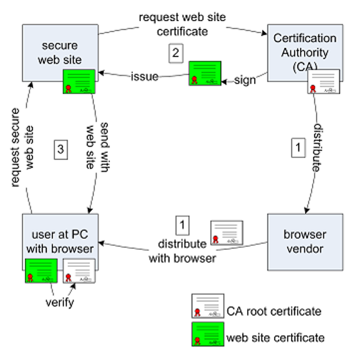

自建CA并将网站改为HTTPS协议网站
本文讲解如何将http网站改为https网站，同时会讲解HTTPS的基础SSL，CA认证以及利用OPENSSL生成公私钥，Web容器apache2的一些基本配置。
搭建环境如下：
Ubuntu 16.04 64bit
Apache2 2.3.5
Ubuntu自带 Openssl

上图主要是帮助理清客户端，网站，CA机构，浏览器之间的关系，以及他们之间的交互流程。
HTTPS站点是为了让用户相信正在访问的网站是正确的网站，所以网站需要证明自己的身份，即向用户（浏览器）展示一份证书。而证书必须由第三方机构（CA机构）签发并认证，网站不能自证。CA作为第三方独立的存在，负责证明网站的正确性，一般是收费服务。
网站向CA提交自身网站信息，包括基本信息和自己的公钥，CA将用自己的私钥对这些网站的信息进行加密，加密后的输出信息即为网站的数字证书，这个证书会发还给网站，CA机构会留存证书副本和相关的网站信息。
根证书和其他证书的概念：
在网络关系中，存在一个信任链，这个链有一个源，这个源头就是根证书，其他的证书，如一级证书、二级证书就是信任链的其他元素。
在这些证书中，假定根证书是绝对安全且值得信任的，这样才能有后面的信任链的存在，因此，根证书是自签名证书（自己认证自己），而其他的证书则需要由根证书来签名验证。
非对称加密算法RSA的简单运用原理：
一对公私钥，私钥只能由自己持有，需要保密存放，而公钥可以发放出去，让任何人持有，无需保密。
加密发送：公钥加密的信息只能被私钥正确解密，这就能保证信息不会被攻击者attacker窃取。
验证身份：私钥加密的信息只能被公钥正确解密，这就能保证信息是被唯一的私钥持有者发出的。
CA机构拥有如下的一些文件(文件名自选)：
caconfig.conf ：CA机构的密钥配置文件，用于生成一对CA的公私钥
cacert.pem ： CA机构的公钥
cakey.pem ：CA机构的私钥
serial ：证书序列号文件 (初始内容为序列号，不能为空，可以设置比如01)
index.txt ：保存已被本机构认证的网站的信息 （初始化时可以为空）
private文件夹 ：用于保存自己的私钥
cert文件夹 ：用于保存以颁发证书的副本，证书副本以证书序列号命名
网站拥有如下的一些文件（文件名自选）：
server.conf : 网站的密钥配置文件，用于生成一对网站的公私钥
tempreq.pem ： 网站的公钥
serverkey.pem ：网站的私钥
server_crt.pem : 网站的数字证书，由CA机构签发
第一步：CA的配置文件
caconfig.conf文件内容如下：1
2
3
4
5
6
7
8
9
10
11
12
13
14
15
16
17
18
19
20
21
22
23
24
25
26
27
28
29
30
31
32
33
34
35
36
37
38
39
40[ ca ]
default_ca = local_ca
[ local_ca ]
dir = /etc/ssl # 生成公私钥的根目录位置，可以选择放在其他位置，在此位置需要root管理权限
certificate = $dir/cacert.pem # CA机构的公钥
database = $dir/index.txt # 保存已被本机构认证的网站的信息
new_certs_dir = $dir/certs # 用于保存以颁发证书的副本，证书副本以证书序列号命名
private_key = $dir/private/cakey.pem # CA机构的私钥
serial = $dir/serial # 证书序列号文件
default_crl_days = 365
default_days = 1825
default_md = sha1
policy = local_ca_policy
x509_extensions = local_ca_extensions
copy_extensions = copy
[ local_ca_policy ]
commonName = optional
stateOrProvinceName = optional
countryName = optional
emailAddress = optional
organizationName = optional
organizationalUnitName = optional
[ local_ca_extensions ]
basicConstraints = CA:false
[ req ]
default_bits = 2048
default_keyfile = /etc/ssl/private/cakey.pem # 默认的CA机构的私钥，即私钥可以有多个，但是必须选一个默认
default_md = sha1
prompt = no
distinguished_name = root_ca_distinguished_name
x509_extensions = root_ca_extensions
[ root_ca_distinguished_name ] # 以下为CA机构的一些基本信息，可以修改
commonName = MyOwn Root Certificate Authority
stateOrProvinceName = NC
countryName = US
emailAddress = root@ca.com
organizationName = Trade Show Hell # 在浏览器里面找证书的时候，是在此机构下找的，证书名为 MyOwn Root Certificate Authority
organizationalUnitName = IT Department
[ root_ca_extensions ]
basicConstraints = CA:true
以上caconfig.conf的目的是生成CA机构的公私钥，公钥即CA的根证书。
第二步：利用openssl生成CA的公私钥
命令如下，这一步会需要设置CA私钥密码（每一个私钥都对应一个密码）：1
openssl req -x509 -newkey rsa:2048 -out cacert.pem -outform PEM -days 365 -config "caconfig.conf"
-newkey rsa:2048 表示生成新的rsa密钥，2048是密钥大小
-out cacert.pem 表示输出，即生成的公钥名称
-outform PEM 表示输出内容格式，可以认为是文件类型，（linux中的文件类型不是以后缀区分）
-days 365 表示过期时间
-config “caconfig.conf” 表示手动指定配置文件，文件路径在双引号内，上述表示相对位置
第三步：网站的配置文件
server.conf文件内容如下：1
2
3
4
5
6
7
8
9
10
11
12
13
14
15
16
17
18
19[ req ]
prompt = no
distinguished_name = server_distinguished_name
req_extensions = v3_req
[ server_distinguished_name ] # 以下为网站的基本信息，可以修改
commonName = localhost # commonName需要与后面的alt_names内的DNS.*相等，用于证明自身
stateOrProvinceName = NC
countryName = US
emailAddress = root@sites.com
organizationName = My Organization Name
organizationalUnitName = Subunit of My Large Organization
[ v3_req ]
basicConstraints = CA:FALSE
keyUsage = nonRepudiation, digitalSignature,
keyEncipherment
subjectAltName = @alt_names
[ alt_names ] # alt_names下的DNS.*需要与前面的commonName相等
DNS.0 = localhost
DNS.1 = localhost
第四步：利用openssl生成网站的公私钥
命令如下，这一步会需要设置网站私钥密码（自设，正常情况下与前面CA密码不同）：1
openssl req -newkey rsa:1024 -keyout serverkey.pem -keyform PEM -out tempreq.pem -outform PEM -config "server.conf"
详细命令选项同前
第五步：CA利用网站的公钥tempreq.pem生成网站的数字证书，即签名
由于这一步其实是CA操作，只与网站的公钥有关（可以认为是网站向CA请求证书），输入是网站公钥，输出是颁发给网站的数字证书，配置文件为CA机构的配置文件，由于需要用CA的私钥加密网站发的信息（即网站的公钥），所以需要输入CA的私钥密码。
命令如下：1
openssl ca -in tempreq.pem -out server_crt.pem -config "caconfig.conf"
同时这一步也会对CA机构保存的一些文件进行更新，比如生成的server_crt.pem即为网站的数字证书，会在cert文件夾下自动生成一个副本01.pem （这里的01即为之前serial中的内容）,而serial中的内容会自增为02， 同时在index.txt中会自动添加网站的证书信息。（这些内容可通过vi或cat命令自行查看）
第六步：配置apache2
首先确保本机有apache2，若没有的话可以使用如下命令安装
1
sudo apt-get install apache2
在安装完成后即可配置apache2了, 若默认安装则可以使用如下命令修改default-ssl文件（需要为root账户，若不是默认安装，则需要找到对应的apache2安装目录，其他的路径则类似）,
1
vi /etc/apache2/sites-available/default-ssl
修改的内容如下
1
2
3
4……
SSLCertificateFile /etc/ssl/server_crt.pem # 这里配置网站的数字证书
SSLCertificateKeyFile /etc/ssl/serverkey.pem # 这里配置网站的私钥
……执行启动SSL模块命令
1
2a2enmod ssl # 允许apache2开启ssl模块
a2ensite default-ssl # 允许站点开始ssl模块，指定站点配置文件为default-ssl重启apache2服务器
1
service apache2 restart # 由于修改了apache2和网站的配置，此步骤需要输入网站的私钥密码
在浏览器中导入CA的公钥（根证书）
不同的浏览器有不同的导入流程，但是基本相同，以firefox为例：
Edit - Preferences - Advanced - View Certificates - Authorities - import - 选择CA的公钥- 在浏览器输入
https://localhost即可访问https版本的apache2默认网站了，同时也可以直接输入localhost查看两者区别
补充：
URL 组成
例如这样一个常见的urlhttp://news.stanford.edu:81/class/g4c2?name=cs155#homework,分别有如下7个部分组成（也有可能不足7个）
- 协议（Protocol）:
http - 二级域名（SLD second-level domain）:
news - 主机名/域名（Hostname）：
stanford.edu - 端口号（Port）：
81 - 路径（Path）：
class/g4c2 - 查询字符串（Query）:
?name=cs155 - 锚点（Fragment）：
#homework
URL中的转义
中文以及一些特殊的字符在URL中是无法显示的，必须通过转义编码后浏览器才能识别，比如空格，换行符等，虽然可以在浏览器地址栏手动输入这些特殊字符，然后显示为人可识别的字符，但是其实它必须被转义才能传输，例如复制这段有特殊字符的url到其他地方，就会自动转义。
HTTPS优缺点
传统的HTTP模式，存在着大量的灰色中间环节，相关信息很容易被窃取，但HTTPS却是通过认证用户与服务器，将数据准确地发送到客户机与服务器，并采用加密方式以防数据中途被盗取，大大降低了第三方窃取信息、篡改冒充身份的风险。
优点主要体现在安全性方面：
- 使用HTTPS协议可认证用户和服务器，确保数据发送到正确的客户机和服务器;
- HTTPS协议是由SSL+HTTP协议构建的可进行加密传输、身份认证的网络协议，要比http协议安全，可防止数据在传输过程中不被窃取、改变，确保数据的完整性。
- HTTPS是现行架构下最安全的解决方案，虽然不是绝对安全，但它大幅增加了中间人攻击的成本。
缺点：
技术方面
- 相同网络环境下，HTTPS协议会使页面的加载时间延长近50%，增加10%到20%的耗电。此外，HTTPS协议还会影响缓存，增加数据开销和功耗。
- HTTPS协议的安全是有范围的，在黑客攻击、拒绝服务攻击、服务器劫持等方面几乎起不到什么作用。
- 最关键的，SSL 证书的信用链体系并不安全。特别是在某些国家可以控制 CA 根证书的情况下，中间人攻击一样可行。
成本方面
- SSL的专业证书需要购买，功能越强大的证书费用越高。个人网站、小网站可以选择入门级免费证书。
- SSL 证书通常需要绑定 固定IP，为服务器增加固定IP会增加一定费用。
- HTTPS 连接服务器端资源占用高较高多，相同负载下会增加带宽和服务器投入成本。
其他总结HTTPS的优缺点(有些陈旧，仅供参考)
正方观点：
- HTTPS具有更好的加密性能，避免用户信息泄露;
- HTTPS复杂的传输方式，降低网站被劫持的风险;
- 搜索引擎已经全面支持HTTPS抓取、收录，并且会优先展示HTTPS结果;
- 从安全角度来说个人觉得要做HTTPS，不过HTTPS可以采用登录后展示;
- HTTPS绿锁表示可以提升用户对网站信任程度;
- 基础成本可控，证书及服务器已经有了成型的支持方案;
- 网站加载速度可以通过cdn等方式进行弥补，但是安全不能忽略;
- HTTPS是网络的发展趋势，早晚都要做;
- 可以有效防止山寨、镜像网站;
反方观点：
- HTTPS会降低用户访问速度，增加网站服务器的计算资源消耗;
- 目前搜索引擎只是收录了小部分HTTPS内容，应该保持观望制度;
- HTTPS需要申请加密协议，增加了运营成本;
- 百度目前对HTTPS的优先展现效果不明显，谷歌较为明显;
- 技术门槛较高，无从下手;
- 目前站点不涉及私密信息，无需HTTPS;
- 兼容性有待提升，如robots不支持/联盟广告不支持等;
- HTTPS网站的安全程度有限，该被黑还是被黑;
- HTTPS维护比较麻烦，在搜索引擎支持HTTP的情况，没必要做HTTPS;